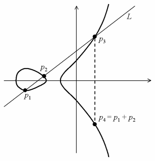
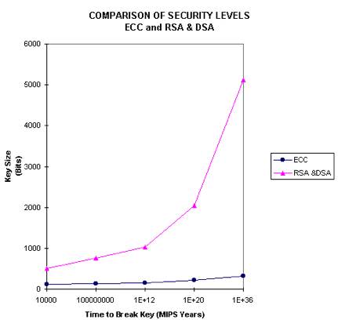

| เนื้อหา 4. Asymmetric Key Cryptography | |
| 4.1 RSA 4.2 ECC |
|
4. Asymmetric Key Cryptography
การเข้ารหัสแบบอสมมาตร (Asymmetric Key Cryptography) บางตำราอาจใช้คำว่า Asymmetric Key Encryption หรือ Public Key Encryption หรือใช้คำว่า Public Key Infrastructure (PKI) หรือ Public-Key Cryptography
การเข้ารหัสแบบนี้ถูกคิดค้นโดย Whit Diffie และ Marty Hellman ตั้งแต่ปี1976 โดยถูกสร้างมาเพื่อเป็นทางเลือกในการส่งข้อมูลที่เป็นความลับ เพราะการเข้ารหัสแบบสมมาตร (ใช้กุญแจดอกเดียว) จะมีปัญหาเรื่องการถูกดักจับ Key และปัญหาเกี่ยวกับการจัดการ Key ที่มีอยู่เป็นจำนวนมากเมื่อใช้ในระบบใหญ่ การเข้ารหัสแบบอสมมาตรจะใช้ Key สองอัน โดยหากเราเข้ารหัสด้วย Key อันหนึ่งจะต้องทำการถอดรหัสด้วย Key อีกอันหนึ่งที่เหลือ
ตัวอย่างเช่น
- หากเข้ารหัสด้วย Key1 จะต้องถอดรหัสด้วย Key2 เท่านั้น
- หากเข้ารหัสด้วย Key2 จะต้องถอดรหัสด้วย Key1 เท่านั้น
- หากเข้ารหัสด้วย Key1 แล้วถอดรหัสด้วย Key1 จะไม่สามารถถอดรหัสได้
- หากเข้ารหัสด้วย Key2 แล้วถอดรหัสด้วย Key2 จะไม่สามารถถอดรหัสได้
การประยุกต์ใช้งานทำได้โดย เก็บ Key อันหนึ่งไว้กับตัวเองเรียกว่า Private Key ส่อนอีก Key หนึ่งสามารถที่จะแจกจ่ายให้ผู้อื่นได้ดังนั้น Key นี้จึงถูกเรียกว่า Public Key เมื่อผู้อื่นต้องการที่จะส่งข้อมูลที่เป็นความลับมายังเจ้าของ Private Key จะต้องทำการเข้ารหัสข้อมูลนั้นด้วย Public Key ของผู้รับ ดังนั้นจึงทำให้ผู้ที่มี Private Key เท่านั้นที่จะถอดรหัสข้อมูลได้ ส่วนการส่งข้อมูลที่เข้ารหัสด้วย Private Key ไปยังผู้อื่น ผู้ใดก็ตามที่มี Public Key (ซึ่งมีอยู่หลายคน) จะสามารถถอดรหัสข้อมูลได้
ตัวอย่างที่ 1
1. สร้าง Private Key และ Public Key ของผู้ใช้ A ขึ้นมา เรียกว่า PvK-A และ PbK-A 1 ตามลำดับ
2. ผู้ใช้ A แจกจ่าย Public Key ของตน (PbK-A) ไปให้กับผู้ใช้ และผู้ใช้ C
3. ผู้ใช้ B สามารถส่งข้อมูลลับ มายังผู้ใช้ A ได้ โดยเข้ารหัสข้อมูลด้วย Pbk-A ซึ่งทำให้
· ผู้ใช้ A ถอดรหัสได้เพราะมี PvK-A (เนื่องจากข้อมูลเข้ารหัสด้วย PbK-A จึงต้องถอดด้วย PvK-A ซึ่งผู้ใช้ A มีคีย์นี้)
· ผู้ใช้ C ถึงแม้ดักจับ Cipher Text ของผู้ใช้ B ได้ แต่ก็ไม่สามารถถอดรหัสได้ เพราะไม่มี PvK-A (เนื่องจาก Private Key จะถูกเก็บไว้ที่เจ้าของเท่านั้น)
4 ผู้ใช้ C สามารถส่งข้อมูลลับมายังผู้ใช้ A ได้ โดยเข้ารหัสข้อมูลด้วย PbK-A ซึ่งทำให้ผู้ใช้ A ถอดรหัสได้ แต่ผู้ใช้อื่นถอดรหัสไม่ได้
5 ผู้ใช้ A ต้องการส่งข้อมูลที่ “ไม่เป็นความลับ” ไปให้ผู้ใช้ B โดยเข้ารหัสข้อมูลด้วย PvK-A ซึ่งทำให้
· ผู้ใช้ B สามารถถอดรหัสข้อมูลได้โดยใช้ PbK-A และมั่นใจได้ว่าเป็นข้อมูลนี้มาจาก A เนื่องจากข้อมูลที่ถอดด้วย PbK-A ได้จะต้องถูกเข้ารหัสด้วย PvK-A ซึ่งผู้ที่มีคีย์นี้มีอยู่คนเดียวเท่านั้นคือผู้ใช้ A
· ผู้ใช้ C ดักจับ Cipher Text ได้ ก็จะสามารถถอดรหัสข้อมูลได้โดยใช้ PbK-A แต่เนื่องจากข้อมูลนี้เป็นข้อมูลที่ “ไม่เป็นความลับ” จึงไม่ได้เกิดปัญหาอะไร
NOTE : การเข้ารหัสโดยใช้ Private Key ของผู้ส่ง สามารถยืนยันตัวผู้ส่งได้
ตัวอย่างที่ 2
1. สร้าง Private Key และ Public Key ของผู้ใช้ A ขึ้นมา เรียกว่า PvK-A และ PbK-
A ตามลำดับ
2. สร้าง Private Key และ Public Key ของผู้ใช้ B ขึ้นมา เรียกว่า PvK-B และ PbK-B ตามลำดับ
3. หาก A ต้องการจะส่งข้อมูลที่เป็นความลับไปยัง B จะต้องเข้ารหัสข้อมูลด้วย PbK-B ซึ่ง B จะเป็นคนเดียวที่สามารถถอดรหัส
ได้ เพราะมี PvK-B
4. หาก B ต้องการจะส่งข้อมูลที่เป็นความลับไปยัง A จะต้องเข้ารหัสข้อมูลด้วย PbK-A ซึ่ง A จะเป็นคนเดียวที่สามารถถอดรหัส
ได้ เพราะมี PvK-A
5. A เข้ารหัสข้อมูลด้วย PvK-A ส่งไปยัง B เมื่อ B ได้รับและถอดรหัสด้วย PbK-A ออกมาได้จึงมั่นใจได้ว่าข้อมูลถูกส่งมาจาก A
(เพราะหากถอดรหัสด้วย PbK-A แสดงว่าข้อมูลนี้จะต้องถูกเข้ารหัสด้วย PvK-A)
6. B เข้ารหัสข้อมูลด้วย PvK-B ส่งไปยัง A เมื่อ A ได้รับและถอดรหัสด้วย PbK-B ออกมาได้จึงมั่นใจได้ว่าข้อมูลถูกส่งมาจาก B
(เพราะหากถอดรหัสด้วย PbK-B แสดงว่าข้อมูลนี้จะต้องถูกเข้ารหัสด้วย PvK-B)
อัลกอริทึมที่ใช้ในการเข้ารหัสแบบอสมมาตร (Asymmetric Key Cryptography) ที่เป็นที่นิยม ได้แก่ RSA และ ECC

4.1 RSA
RSA เป็นอัลกอริทึมในการเข้าหัสแบบอสมมาตร ถูกสร้างขึ้นมาเมื่อปี1978 โดย Ron Rivest, Adi Shamir และ Leonard Adleman ตั้งแต่คิดค้นมายังไม่มีใครสามารถเบรคอัลกอริทึมนี้ได้ และ RSA ได้ถูกนำมาใช้อย่างแพร่หลายในด้าน e-commerce
4.1.1 กระบวนการทำงานของ RSA
(1) เลือก p และ q ซึ่งเป็นจำนวนเฉพาะที่มีค่าต่างกัน
(2) ให้ n = pq
(3) ให้ m = (p-1)(q-1)
(4) เลือกค่า e ที่ 1 < e < m ซึ่งหารร่วมมากของ m กับ e มีค่าเป็น 1 (สามารถหาค่า e ได้โดยการสุ่มค่าจำนวนเต็มบวกพร้อมกับทดสอบว่าหารร่วมมากของ m กับ e มีค่าเป็น 1)
(5) หาค่า d ที่ทำให้ ed mod m = 1
(6) Public key คือ (e,n)
(7) Private key คือ (d,n)
(8) ให้ M คือข้อความที่ยังไม่ถูกเข้ารัหส (ในรูปแบบของตัวเลข) M < n
(9) การเข้ารหัส => C = M^e mod n
(10) การถอดรหัส => M = C^d mod n
สาเหตุที่ทำให้ RSA ยากที่จะทำการเบรคได้คือ แม้จะทราบ Public Key (e,n) ทราบค่า Message (M) และทราบค่า Cipher (C) ก็ตาม แต่ก็ยากที่จะทำการคำนวณย้อนกลับเพื่อหาค่าของ Private Key (d) ได้
4.1.2 ตัวอย่างการเข้ารหัสและถอดรหัสด้วย RSA
(1) เลือก p และ q ซึ่งเป็นจำนวนเฉพาะที่มีค่าต่างกัน
p = 7
q = 17
(2) ให้ n = pq
ดังนั้น n = 7*17 = 119
(3) ให้ m = (p-1)(q-1)
ดังนั้น m = 6*16 = 96
(4) เลือกค่า e ที่ 1 < e < m ซึ่งหารร่วมมากของ m กับ e มีค่าเป็น 1 (สามารถหาค่า e ได้โดยการส่มค่าจำนวนเต็มบวกพร้อมกับทดสอบว่าหารร่วมมากของ m กับ e มีค่าเป็น 1) เลือก e = 5 และทดสอบหารร่วมมากของ 96 กับ 5 แล้วได้ 1
(5) หาค่า d ที่ทำให้ ed mod m = 1
ได้ค่า d = 77 เพราะ 5*77 mod 96 ได้ 1
(6) Public key คือ (e,n)
ดังนั้น Public key คือ (5,119)
(7) Private key คือ (d,n)
ดังนั้น Private key คือ (77,119)
(8) ให้ M คือข้อความที่ยังไม่เข้ารหัส (ในรูปแบบของตัวเลข) M < n
ให้ข้อความที่ยังไม่เข้ารหัส M = 19
(9) การเข้ารหัส => C = M^e mod n
ได้ C = 19^5 mod 119 = 66
(10) การถอดรหัส => M = C^d mod n
ได้ M = 66^77 mod 119 = 19

4.2 ECC
ECC ย่อมาจาก Elliptic Curves Cryptography ได้รับการนำเสนอโดย Neal Koblitz และ Victor S. Miller ในปี 1985
โดยอัลกอริทึมการเข้ารัหส ECC นี้ได้รับการพัฒนาจากสมการของเส้นโค้งของวงรี
y^2= x^3 + ax + b

กราฟแสดงความสัมพันธ์ของสมการ Elliptic Curves
ECC มีข้อดีที่เหนือกว่า RSA คือจะใช้คีย์ที่สั้นกว่าแต่สามารถให้ความปลอดภัยเท่ากับ RSA ได้ หรือหากใช้คีย์ที่ยาวเท่ากับคีย์ของ RSA จะมีความปลอดภัยสูงกว่า คือหากต้องการที่จะเบรคจะใช้เวลาในการ Brute Force นานกว่า RSA
เนื่องจาก ECC ใช้ Key ที่มีขนาดเล็กกว่า RSA มาก และมีความสามารถในการคำนวณที่รวดเร็ว ใช้พลังงานต่ำและใช้หน่วยความจำน้อย ดังนั้น ECC จึงเหมาะสำหรับการใช้งานในอุปกรณ์เคลื่อนที่ขนาดเล็กอย่างเช่น โทรศัพท์มือถือ Pocket PC และ PDA เป็นต้น

กราฟเปรียบตารางที่ใช้ในการแคร็ก ECC เทียบกับ RSA